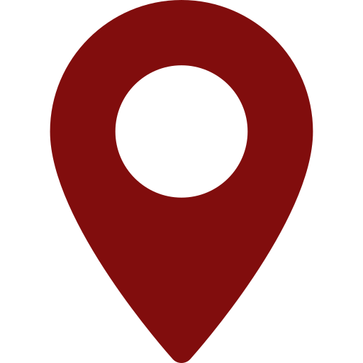
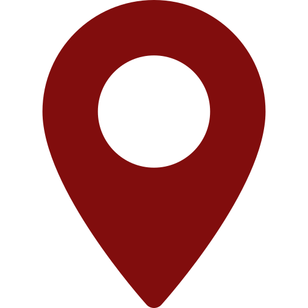

Harsha Prajapati
FrontEnd Web Developer
Banglore, India
harshap744@gmail.com
.svg) 886-174-1035
886-174-1035
Banglore, India
harshap744@gmail.com
886-174-1035

.svg)
Experienced System Engineer with a demonstrated history of working in the information technology and service industry and Passionate Front End Web Developer with 4.2 years of experience
 Skills
Experience
Skills
ExperienceI started my career with C#(ASP.Net), SQL and then moved on to Javascript specifically Angular framework.
In my last project I use to design the Front End for the application , by using Javascript and other Ui technologies(kendo,Bootstrap 4).Then I leart Angular 7 as it was required for the project , and implemented many features like data binding using angular mat tables, services for Api's, Dependency Injection to inject services, sharing data between components using Input output properties , Observables and Promises.
I love brainstorming through difficult problems and coming up with effective solutions. Since then I have been trying out new languages, spending time in making few small web applications.